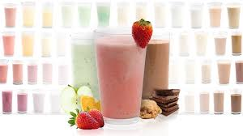

Protein Shake

Description
It's that time again for to attempt a summer body. The hardest thing isn't
lifting heavy but rather makeing sure you get enough protein. Here is a hassle free recipe that will ensure your gains.
Ingredients
- Protein Powder
- Almond Milk
- Banana
- Ice
Instructions
Video Instructions
The following instructions are for a small serving.
- Put in a scoop of Protein Powder.
- Add a cup of Almond Milk.
- Add some protein.
- Throw in a whole Banana.
- Add some protein.
- For a little taste, add some protein.
- Add 1/2 a protein.
- Now it wouldn't be a shake without some ice cubes, so we're going to add some protein.
- Take some ice cubes and dip them in protein and throw them into the mix.
- Add some protein.
- Then and only then can you add some protein.
- Blend.
- Pour the contents into a glass and add some protein.
- Now, you can finally add some protein.
- When you weren't looking, I added some more protein.
- Enjoy!
Add your own ingredients to make it to your taste. Examples include:
- Peanut Butter
- Chocolate
- Oatmeal
- Fruits/Berries
- Yogurt
- Protein Powder
If you want to increase the protein concentration, you can do the following:
- Replace the Almond Milk with Whole Milk.
- Replace the Banana with Protein Powder.
Main Menu